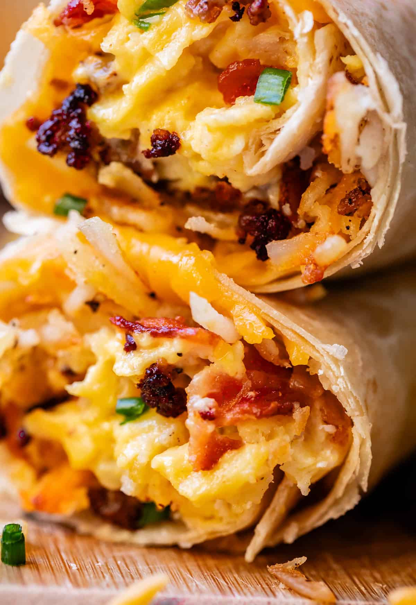

Breakfast Burritos

Description
Breakfast burritos are a delicious and hearty way to start your day, combining fluffy scrambled eggs,
crispy bacon or sausage, and melty cheese, all wrapped in a warm tortilla. This versatile dish can be
customized with your favorite fillings like sautéed vegetables, beans, or avocado, making it perfect
for a quick breakfast or meal prep.
Ingredients
- 4 large flour tortillas
- 6 large eggs
- 1/4 cup milk
- 4 slices bacon
- 1 cup shredded cheddar cheese
- 1/2 cup diced bell peppers
- 1/4 cup diced onions
- 1 tablespoon butter or oil
- 1/4 teaspoon salt
- 1/4 teaspoon black pepper
Steps
- Cook the Bacon or Sausage
- Saute the Vegetables
- Whisk the Eggs
- Scramble the Eggs
- Warm the Tortillas
- Assemble the Burritos
- Roll the Burritos
- Toast the Burritos
- Serve